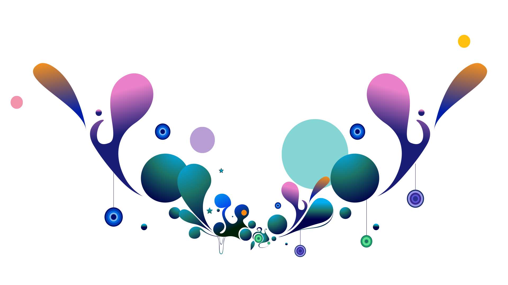

Vizualinio turinio pateikimas įvairiomis meninėmis ir techninėmis priemonėmis. Grafinis dizainas paprastai susijęs ne tik su meninių vaizdų kūrimu, bet ir su analize, organizavimu ir pateikimo metodais vizualinės komunikacijos problemų sprendimams. Tai tarpdisciplininė komercinių ir nekomercinių institucijų vizualinės komunikacijos problemų sprendimo veikla, kurioje reikia suderinti turinio vizualinį kūrybiškumą su komunikacijos, technologijų ir verslo žiniomis. Grafinio dizaino terminą pirmą kartą 1922 m. panaudojo JAV dizaineris William Addison Dwiggins.
